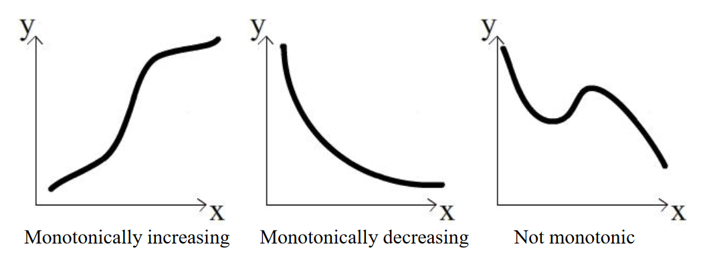
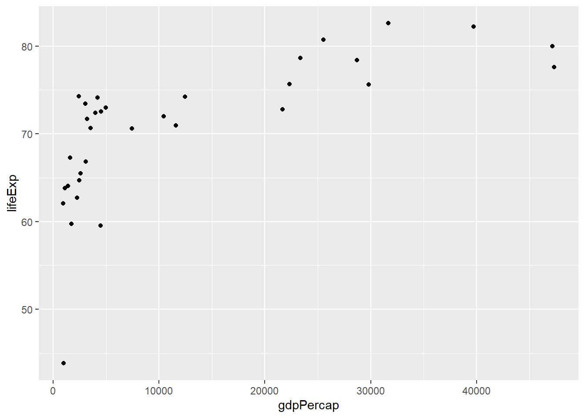

library(modeldata)
table(scat$Species,scat$ropey)
0 1
bobcat 24 33
coyote 13 15
gray_fox 11 14The particular hypothesis test you’ll use will depend on the kind of data you have, the number of variables, and whether certain assumptions about the a data can be met. Below is a flow chart that can guide you to select a (click the link to see a larger version).
You may have seen one of these before, they are a common feature of statistics courses. These are meant to be a guide rather than a definitive statement on choice of test, and this list is by no means exhaustive. You may find that your data have some particulars not covered in this chart, in which case you may need to look at alternative tests.
For now, let’s go through a couple of examples using data we have seen before to show how you might choose a test using this chart.
Let’s say we wanted to know whether a ropey or segmented appearance is a clear indicator of species in the scat dataset. First we,’ll start with ropeyness:
State the hypothesis: There is no difference in the frequency of ropey scat appearance among grey foxes, coyotes, and bobcats. We will use 0.05 as our threshold for rejection.
Collect the data: The data are the scat dataset from the modeldata package, specifically the Species and ropey columns. The Species column is nominal (character) data, while the ropey column is a binary (0 or 1) value representing a true/false, which is also nominal. We can look at these frequencies by using the table function:
library(modeldata)
table(scat$Species,scat$ropey)
0 1
bobcat 24 33
coyote 13 15
gray_fox 11 14From this table, it appears that ropeyness is something that is more common than not among all species.
Perform a test: Here we are looking for a difference between species, and our data is nominal and therefore categorical. The flow chart above suggests we should use the chi-squared test for association.
The assumptions of the chi-squared test can be found here. An important one is that there has to be enough data so that each combination of categories in the table above could be at least 5. In our case, since there are 6 different combinations, we need at least 30 observations. The scat dataset exceeds this threshold.
The chisq.test function in R lets us run this test on our data:
chisq.test(scat$Species,scat$ropey)
Pearson's Chi-squared test
data: scat$Species and scat$ropey
X-squared = 0.14443, df = 2, p-value = 0.9303The test statistic \(\chi^2\) is an indicator of whether there is a difference in how the categories in both variables are associated with one another. The degrees of freedom in this case is the number of categories in one variable multiplied by the number of categories in the other (or 2 x 1 here).
Interpret the p-value: In this case our p-value is around 0.93, which is well above the 0.05 threshold for rejection. In this case, we cannot reject the null hypothesis that there is no difference in ropey scat frequencies among the three species studied here.
Let’s try this process again, only this time we will evaluate segmented appearance:
State the hypothesis: There is no difference in the frequency of segmented scat appearance among grey foxes, coyotes, and bobcats. We will use 0.05 as our threshold for rejection.
Collect the data: Same as above, but with the segmented column in place of the ropey column. The segmented data are also binary (0/1) values.
table(scat$Species,scat$segmented)
0 1
bobcat 15 42
coyote 14 14
gray_fox 19 6Just looking at these numbers, there appear to be notable differences between the frequencies for each species. Bobcats, for example, are far more likely to have segmented scat. Gray foxes? Not so much.
Perform a test: Once again, we will use the chi-squared test to evaluate difference among nominal variables:
chisq.test(scat$Species,scat$segmented)
Pearson's Chi-squared test
data: scat$Species and scat$segmented
X-squared = 18.06, df = 2, p-value = 0.0001198Interpret the p-value: In this case our p-value is well below the 0.05 threshold for rejection, so we can safely reject the null hypothesis that there is no difference in segmented scat frequencies between the studied species of mesopredators.
Let’s say we wanted to know whether a relationship exists between per capita GDP and life expectancy among countries in Asia.
State the hypothesis: There is no relationship between per capita GDP and life expectancy in 2007 among measured countries in Asia.
Collect the data: The data are from the gapminder dataset from the package of the same name, specifically the gdpPercap and lifeExp columns. These will be filtered to measures from Asia from the year 2007. Both are ratio (continuous) variables.
library(gapminder)
asia2007<-gapminder %>%
filter(year==2007) %>%
filter(continent=="Asia") %>%
select(country,gdpPercap,lifeExp)Perform a test: Here we are looking at a relationship between continuous variables; in other words, a correlation. Following the flow chart, it asks about whether parametric assumptions have been met. This means whether, like our t-test, the data are expected to follow a normal distribution. We can test this using the shapiro.test function. First for GDP:
shapiro.test(asia2007$gdpPercap)
Shapiro-Wilk normality test
data: asia2007$gdpPercap
W = 0.77551, p-value = 1.139e-05And then for life expectancy:
shapiro.test(asia2007$lifeExp)
Shapiro-Wilk normality test
data: asia2007$lifeExp
W = 0.92228, p-value = 0.02119In both cases, the p-value is less than 0.05, so we can reject the notion that either of these is distributed normally. This means we cannot use the Pearson correlation with the data as is, so we’ll use the Spearman correlation.1
The assumptions of the Spearman method can be found here. An important one is that the relationship needs to be monotonic; that is, as the value in the independent variable increases, the value of the response variable must either increase or decrease, but it can’t go up then down or vice versa.

We can look at the data visually to assess this quality:
ggplot(asia2007,aes(x=gdpPercap,y=lifeExp)) +
geom_point()
We can see from this plot that the life expectancy values generally increase from left to right, so the criteria is met. We can now run our test using the cor.test function in R, and giving it our two columns as arguments along with method="Spearman" to use the correct approach for our data:
cor.test(asia2007$gdpPercap,asia2007$lifeExp,method="spearman")
Spearman's rank correlation rho
data: asia2007$gdpPercap and asia2007$lifeExp
S = 980, p-value = 3.076e-07
alternative hypothesis: true rho is not equal to 0
sample estimates:
rho
0.8362299 The rho value, listed at the bottom, can go from -1 to 1, A negative value indicates a decreasing relationship, while a positive value indicates an increasing relationship. The closer the value is to one or the other of these extremes tells us how close it is to a perfectly increasing or perfectly decreasing relationship.
Interpret the p-value
The p-value is well under our threshold of 0.05, so we can reject the hypothesis that there is no relationship between these two variables.
The objective here is not to make you an expert at hypothesis testing, and but rather to help develop familiarity with what a hypothesis testing process looks like and how to go about it in R. If you have the correct choice of test and the assumptions accounted for, you can usually implement a hypothesis test with a single line of code. But meeting those standards is very important for making sure your work is conducted appropriately.
There are endless resources out there for identifying the correct test for your data and hypothesis, as well as determining what the assumptions are of your test. Here are just a few to get your started:
YaRrr: The Pirate’s Guide to R has a great section on hypothesis tests
UC Business Analytics R Programming Guide discusses a wider range of hypothesis tests
UCLA Statistical Methods and Data Analytics has a detailed guide to selecting a test, along with links to their R implementation
What’s the difference? The Pearson correlation evaluates the relationship between the variables using their values; the Spearman method simply treats the↩︎